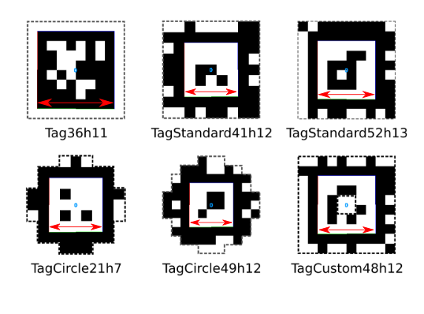

AprilTag Generator — Print AprilTag Markers Online (SVG & PDF)
Free, open, browser-based AprilTag generator for robotics and computer vision. Generate tag36h11, tag25h9, tag16h5, tagStandard41h12, tagStandard52h13, and tagCustom48h12 fiducial markers in any physical size. Preview live, save as SVG, or build a multi-tag A4 print sheet with dashed cut lines and export to PDF.
Live preview
Print sheet 0
Tags are packed onto A4 pages (210 × 297 mm, 10 mm margin). Dashed lines show where to cut. Hit Print / PDF to print all pages.
Available IDs per AprilTag family
AprilTag offers several families with different trade-offs between marker size, robustness, and the number of unique IDs available. Pick the one that matches your application:
| Tag family | Number of IDs |
|---|---|
| tag16h5 | 30 |
| tag25h9 | 35 |
| tag36h11 | 587 |
| tagCircle21h7 | 38 |
| tagCircle49h12 | 65,698 |
| tagCustom48h12 | 42,211 |
| tagStandard41h12 | 2,115 |
| tagStandard52h13 | 48,714 |
What is an AprilTag?
AprilTags are a popular family of visual fiducial markers developed by the APRIL Robotics Lab at the University of Michigan. They look like small QR-code-style black-and-white squares and are widely used in robotics and computer vision for:
- Camera calibration — computing intrinsic / extrinsic parameters.
- Robot localization & mapping — tagging the environment with known landmarks.
- 6-DoF pose estimation — recovering the position and orientation of an object.
- Augmented reality — anchoring virtual content to real-world surfaces.
- Drone / UAV landing — precision landing pads with a known ID.
- Industrial automation — conveyor part tracking, AGV navigation.
Each tag encodes a unique ID and carries enough redundancy
(the “h” in tag36h11 stands for the minimum
Hamming distance) to be recognised reliably under bad lighting,
motion blur, and at long range. The detector returns the four image-corner
coordinates of the marker, which — given the printed tag size — gives
you a metric pose.
How to use this AprilTag generator
- Pick an AprilTag family (e.g.
tag36h11for general use). - Choose the tag ID — any integer from 0 to the family's max.
- Enter either the total size (paper edge in mm) or the tag size (the value you give the detector). The two fields are linked — type one and the other auto-converts.
- Click Save SVG to download a single marker, or + Add to sheet to start a multi-tag print sheet.
- Hit Print / PDF to print the sheet on A4 paper. Each tag is automatically wrapped in a dashed cut line so you know exactly where to scissor.
Everything runs locally in your browser — no signup, no upload, no tracking. The generator pulls the official tag SVGs from the AprilRobotics/apriltag-imgs repository.
Tag size: what to enter into your detector
The single most common AprilTag bug is using the wrong tag size. The tag size the detector expects is not the outer paper edge. It is the side length of the inner solid black detection square (the boundary between the black border and the white quiet zone).

For each family the ratio between detection-square side and the full SVG (the printed paper) is fixed:
tag16h5: tag size = 6/8 × total size (= 0.75)tag25h9: tag size = 7/9 × total size (≈ 0.778)tag36h11: tag size = 8/10 × total size (= 0.80)tagStandard41h12: tag size = 5/9 × total size (≈ 0.556)tagStandard52h13: tag size = 6/10 × total size (= 0.60)tagCustom48h12: tag size = 6/10 × total size (= 0.60)
The two fields in the form above do this conversion for you automatically — type either one and the other updates.
Frequently asked questions
Which AprilTag family should I use?
For general robotics and AR use, tag36h11 is the
usual recommendation: 587 IDs, very robust detection, well-supported by every
popular library (apriltag, AprilTag-ROS, OpenCV, ArUco bridges).
If you need many unique IDs (warehouses, asset tracking),
tagStandard52h13 (48 714 IDs) or tagCustom48h12
(42 211 IDs) are good choices.
Can I print AprilTags as PDF?
Yes. Click Print / PDF and choose “Save as PDF” from your browser’s print dialog. The tool prints either the single live preview or, if you've added tags to the sheet, a multi-page A4 PDF with dashed cut lines.
What size should I print my AprilTag?
That depends on your detection range. As a rule of thumb, an AprilTag needs
to occupy at least ~6 pixels per data cell in the camera
image to be reliably detected. For tag36h11 at a 5 m range
with a 1080p sensor, a 100 mm tag size works well in practice.
Can I use these AprilTags with ROS / OpenCV?
Yes — the generated markers are bit-for-bit identical to the official AprilTag images, so they work with apriltag_ros, apriltag (C library), OpenCV, ROS 2 packages, and any other standard AprilTag detector.
Is this AprilTag generator free?
Completely free, no signup, no ads, no tracking. The whole tool runs as static HTML / JavaScript on GitHub Pages.